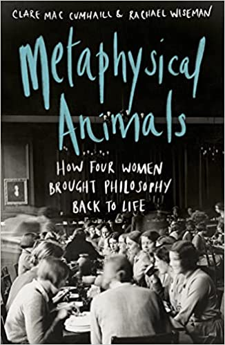

'A wonderful, important and also a necessary book, which sets the records straight... and celebrates a remarkable quartet of women thinkers'
Peter Conradi

I’ve previously mentioned the two books on the Golden Age of female philosophy at Oxford and how thrilling I find the story. I’ve always found intellectual authoritarianism to be intensely galling, involving, as it usually does, defenders of intellectual orthodoxy using their own incomprehension as an argument against some challenge, rather than an invitation to reflect on their own inadequacies. This is what I call the Collingwood question after the question(s) R. G. Collingwood asked himself about the Albert Memorial. That is, as you ramp up your capacity to disagree with something, you ask whether you might be missing something. Without this, power and establishment defends its position, not with its intellectual superiority, but by placing its thumb on the scale of the onus of proof.
I love the book’s expression “aggressive incomprehension”:
As the trickle of Jewish-German refugees appearing on the pavements of Oxford became a steady stream, Ayer’s battle-cry began to be heard in the junior common rooms and the classrooms. Mary and Iris arrived at Somerville’s gates, to find themselves among ‘a whole generation of undergraduates … excited to find that all they needed to do if they wanted to refute some inconvenient doctrine was to say loudly and firmly “I simply don’t understand that” or “But what could that possibly mean?”.’ The kind of curiosity and bewilderment that had led Mary, Iris and Elizabeth to philosophy had been decreed a sign of embarrassing naivety. ‘I don’t understand that’ was no longer the beginning of a philosophical conversation but the end of one. …Thousands of years of human endeavour to contemplate the significance of human life and ethics was a long episode of meaningless chatter. That this declaration had been made at a moment in world history when serious thinking about ethical life was so evidently needed, made it all the more distressing to the old men whom Ayer had declared extinct.
Why do I think this book could be a feminist masterpiece? (Remember I'm only a quarter of the way through it!). I think any liberation movement — and feminism is easily the most successful liberation movement of our time — has two messages for humanity. The first is simple and politically compelling. A particular class of people (in this case women) are disadvantaged and oppressed by established physical, legal and/or cultural structures. And feminism says “enough already". The second message is both more difficult but ultimately richer: It says “Women have something to offer all the community beyond their economic productivity. Their contribution can enrich all our lives by broadening our sensibilities and in so doing creating counter-balancing forces to dominant sensibilities. These two strains can come into conflict with one another, particularly where we’re talking about cultural oppression and ideas. For instance, if you think (as I do) that economics is ridiculously biased towards a particular very male obsession with demonstrating cleverness and objectivity (the Oxford women had the same problem with Oxford philosophers), then the task of getting more women into the discipline is a double task. If we think only of attracting and getting more women through the disciplinary gatekeepers, the ones who'll manage that most easily will be the ones who play by the existing rules. We want more women in economics. But we also want them to broaden its horizons — to bring this second gift of a liberation movement. And even here there are traps. Because I want this broadening and balancing to be about more than just paying more attention to ‘womens’ issues’ like care and housework. As I often argue (for instance here), I think economics in its current scientistic mode is in a dreadful state. Yet lots of those seeking to promote more women into economics are at pains to show that women can perform against scientistic criteria as well as the men who made it the orthodoxy. Like Soumaya Keynes. I tried to capture one potential benefit of a greater breadth of focus in this essay suggesting that Adam Smith was more of a feminist economist than many because of his rich 'relational' way of thinking about the bonds between people. That first message isn’t suppressed in Metaphysical Animals. You can still see the idiocy that the women had to endure (while being pleasantly surprised that, beneath the discrimination and patronising nonsense, it was tolerably open to challenge and lots of people wanted to help). However, what I love about what I’ve read of Metaphysical Animals so far is that the second more difficult message shines through. I note in this context that the survivor of the other three women — Mary Midgely — spoke to the authors at length before she died and she encouraged them to emphasise the positive — to make the book about the positive contribution the women made and for it to be clear about, but not dwell unduly on their difficulties and disadvantages. Listen to this podcast. This it seems to me to do magnificently. It’s very enjoyably and clearly written and shows the women — all apparently very different in their interests — united in their dislike of the intellectual authoritarianism, pomposity and complacency they were fighting. It also shows how much help they got from those already there — both men and women — who were likewise dissidents against what Mary Midgely called, hilariously, the “weedkiller” of A. J. Ayer’s specially British interpretation of logical positivism.
Good review here
Another good review here. "The Sommerville Quartet".